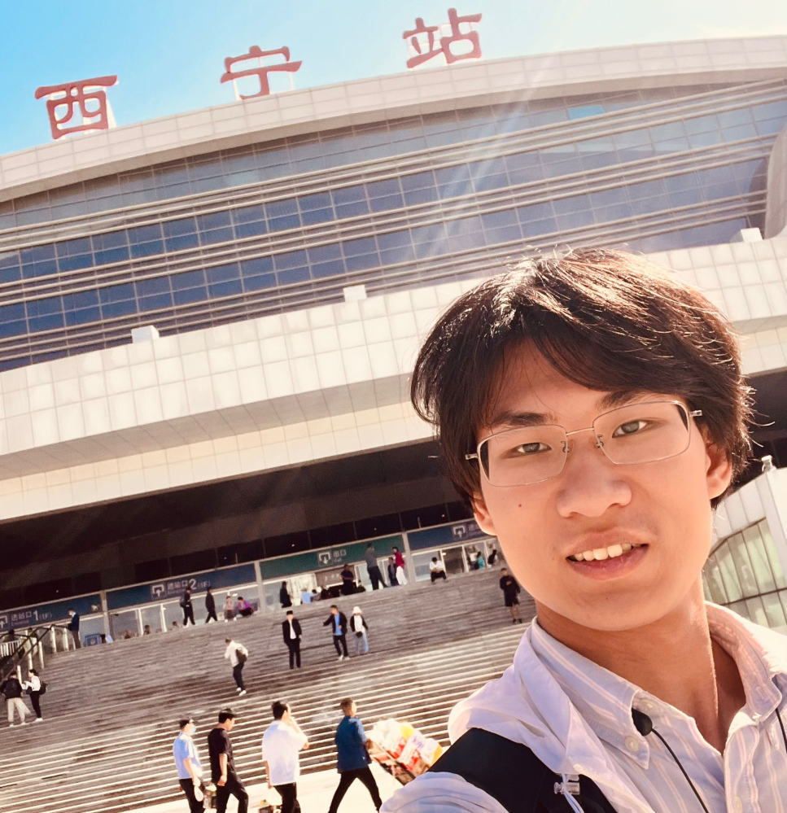
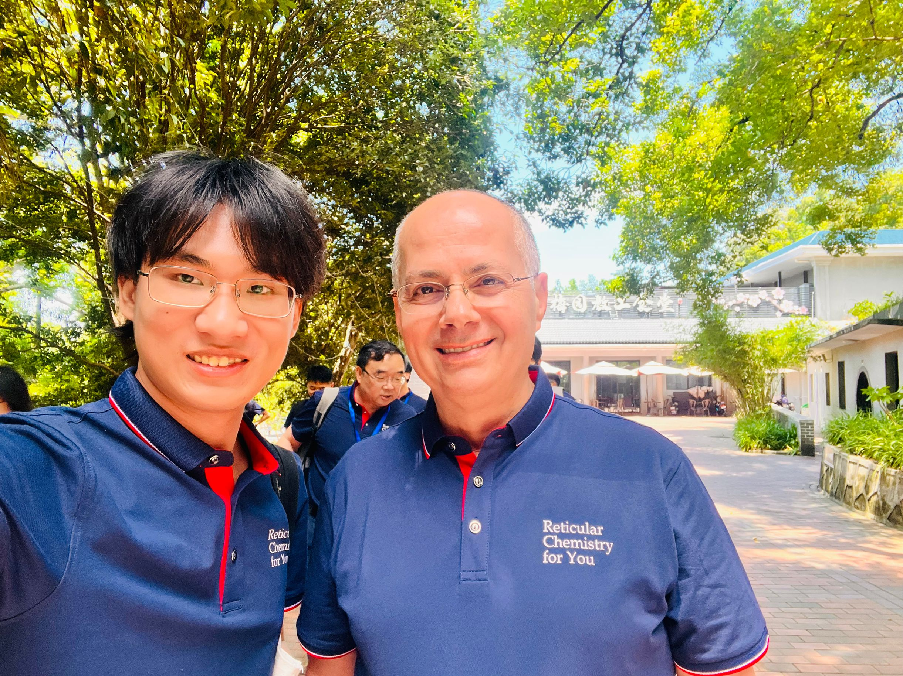
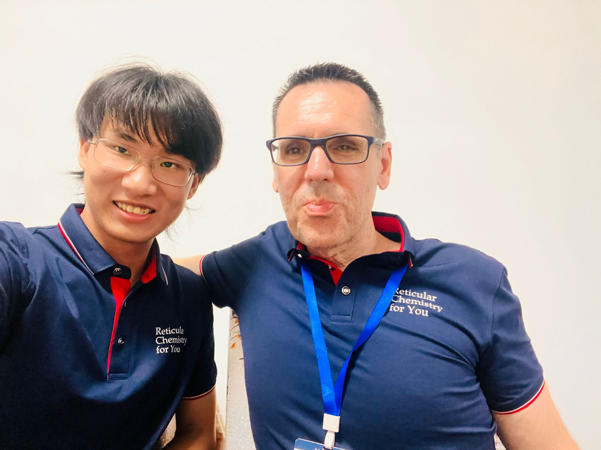

Self Introduction
Nice to meet you! This is Ming-Jie Song, come from Beijing, now I am an undergraduate in my junior year in Nankai under the guidance of Prof. Bin Zhao.
I am interested in Metal-Organic Frameworks (MOFs), especially cluster-based MOFs and its application in transformation of carbon dioxide by thermocatalysis or photocatalysis.
Age
20
Email
mjsong197@gamil.com
mobile
(+86) 18100100619
Hometown
Beijing, P.R.China
Research Experience
Synthesis of Cluster-Based MOFs and its application in transformation of CO2
Nankai Univ. Supervisor: Prof. Bin Zhao 04/2023-Present
Nankai Univ. Supervisor: Prof. Bin Zhao 04/2023-Present
April 2023 - Present
• Synthesis new kinds of organic ligands and characterization of organic compounds.
• Synthesis metal-organic frameworks using hydrothermal method.
• Design and synthesizing and expand organic substrates.
• Catalytic absorption and transformation of CO2 with MOFs and separation of organic products.
• Synthesis metal-organic frameworks using hydrothermal method.
• Design and synthesizing and expand organic substrates.
• Catalytic absorption and transformation of CO2 with MOFs and separation of organic products.
Design and Characterization of porous materials
Wuhan Univ. Supervisor: Prof. Hexiang Deng 07/2024-08/2024
Wuhan Univ. Supervisor: Prof. Hexiang Deng 07/2024-08/2024
July, 2024 - August, 2024
• Crystallochemistry course and experiments.
• Basic principle and operation and data process of BET instrument.
• Basic principle and experiments of photocatalyst of CO2 under MOFs.
• Basic principle and operation and data process of BET instrument.
• Basic principle and experiments of photocatalyst of CO2 under MOFs.
Education
Chemistry | Bachelor Nankai University
2022 - 2026 (expected)
• GPA: 87.47/100 , Rank: 12/113 (major); 87.21/100, Rank: 6/20 (Overall)
• TOFEL: R L W S
• Landun Chuying Scholarship (Funded by alumnus of College of Chemistry, NKU) 2023
• Outstanding Class Cadre Award 2023
• TOFEL: R L W S
• Landun Chuying Scholarship (Funded by alumnus of College of Chemistry, NKU) 2023
• Outstanding Class Cadre Award 2023
Summer term exchange | Visiting Student Wuhan University
Summer, 2024
• Crystallochemistry course by Prof. Hexiang Deng
• Frontier Forum On Reticular Chemistry
• Frontier Forum On Reticular Chemistry
Publication
Noble metal-free Cu(I)-In(III)-organic framework for catalytic carboxylative cyclization of CO2 to construct 1,3-oxazin-2-ones
2022 - 2026 (expected)
• GPA: 87.47/100 , Rank: 12/113 (major); 87.21/100, Rank: 6/20 (Overall)
• TOFEL: R L W S
• Landun Chuying Scholarship (Funded by alumnus of College of Chemistry, NKU) 2023
• Outstanding Class Cadre Award 2023
• TOFEL: R L W S
• Landun Chuying Scholarship (Funded by alumnus of College of Chemistry, NKU) 2023
• Outstanding Class Cadre Award 2023
Gallery of memories
